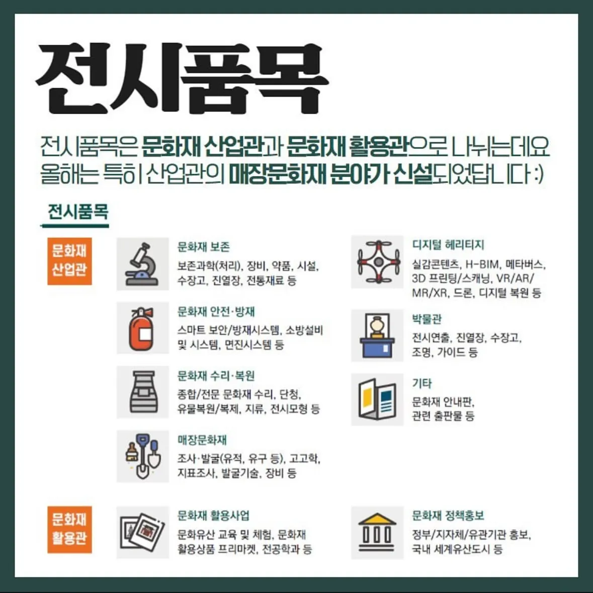
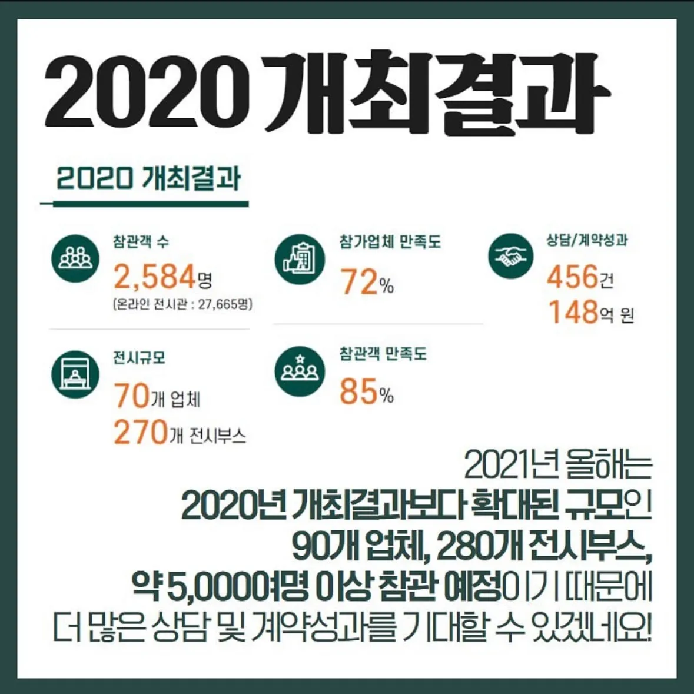
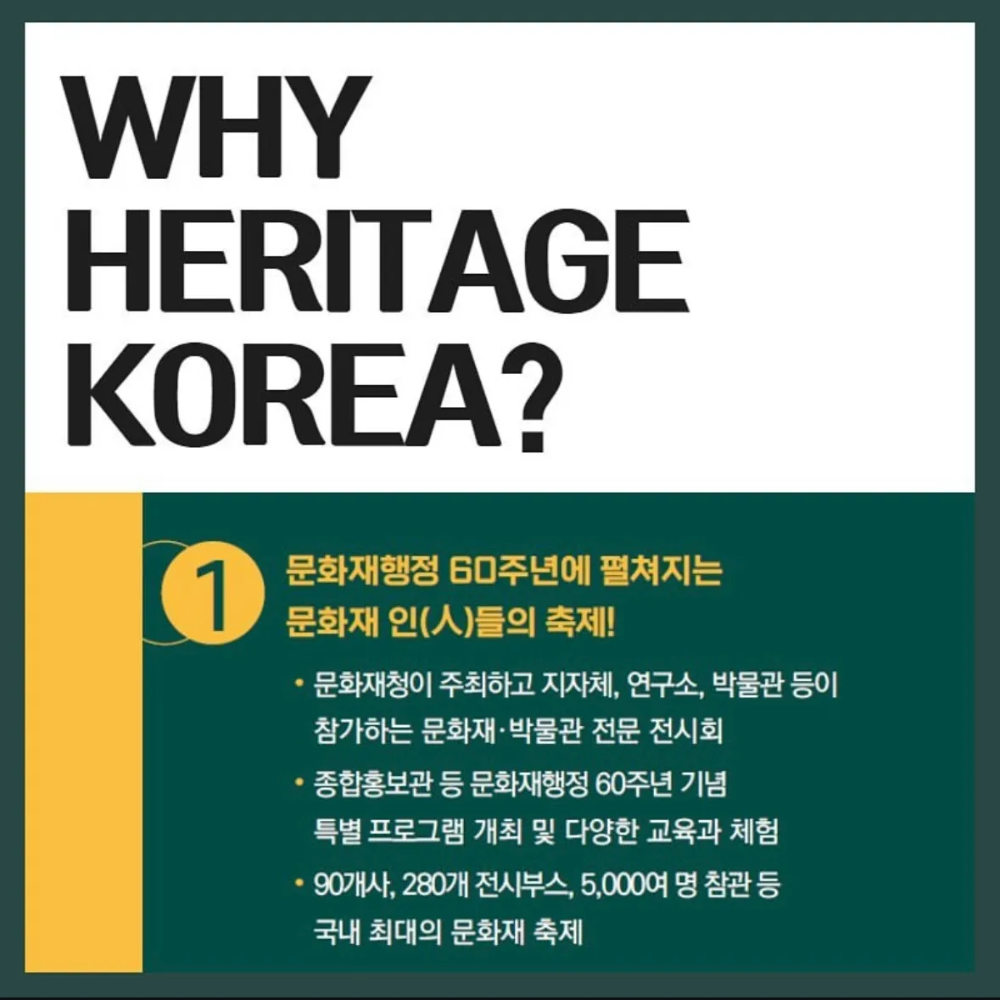
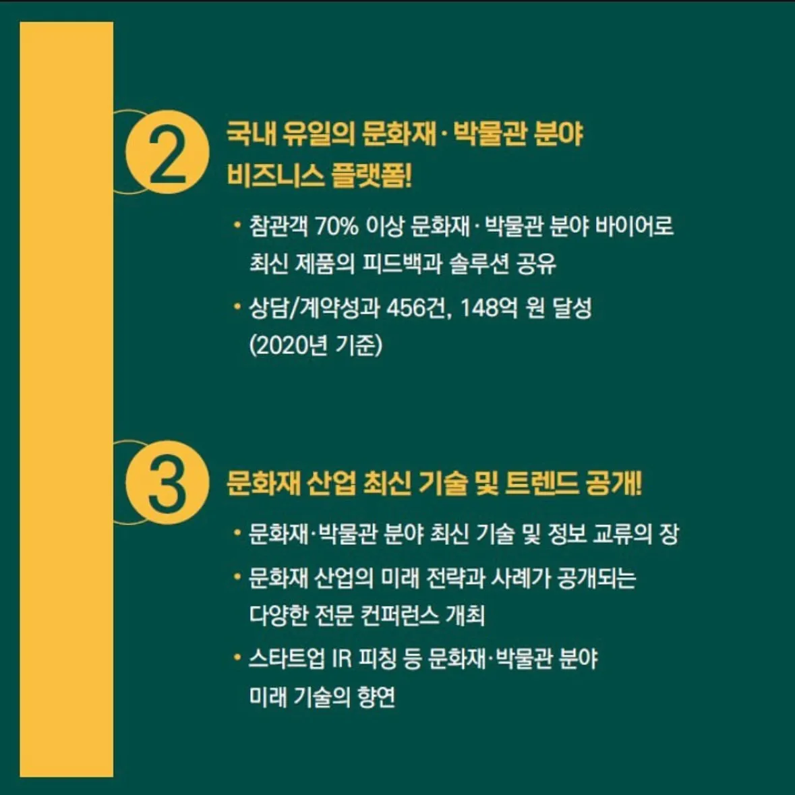

PORTFOLIO 03 · SNS / CUSTOMER JOURNEY
카드뉴스
디자인
Notion에 정리된 원본 작업물을 바탕으로, 대상별 메시지와 행사 전 과정을 카드뉴스로 설계했습니다.
문제
대상마다 필요한 정보가 달랐습니다.
관람객·참가업체·운영스탭에게 같은 방식으로 안내하면 행동으로 이어지기 어려웠습니다.
해결
대상별 카드뉴스로 나눴습니다.
행사 일정, 부대행사, 참가업체, 이벤트와 모집 안내를 목적에 맞게 분리했습니다.
Notion 원본 캡처






장점
- 정보를 빠르게 이해합니다.
- 공유하기 쉽습니다.
- 대상별 행동을 유도합니다.
- 행사 전 과정을 지속적으로 알립니다.
내 역할
콘텐츠 전략 · SNS 운영 · 행사 정보 구조화 · 참여 유도 · 고객 여정 설계
자산 구축
반복 제작할수록 강해지는 Instagram 템플릿 자산
Notion에 새로 만든 Instagram 포스트 템플릿을 축적하고 행사 안내·홍보·이벤트에 반복 활용했습니다. 브랜드 톤을 유지하면서 제작 시간을 줄이고, 다음 행사에도 빠르게 확장할 수 있도록 만든 운영 자산입니다.